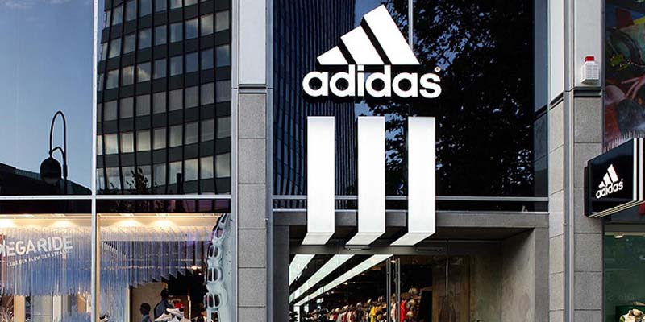

Mision
La misión que se propuso Adidas es ser la marca líder a nivel mundial en el ámbito de productos deportivos, para
ello se esfuerza cada día ofreciendo las mejores marcas y productos innovadores que mejoren su posición ante la
competencia.

Liderazgo de Adidas
Adidas se ha posicionado como una de las empresas multinacionales más importantes del planeta gracias a los 6
pilares que conocerás a continuación:
- Orientación clara al cliente: Esta se logra a través de las 3 divisiones de productos; Sport Performance,
Sport Heritage y Sport Stile. demás, la empresa invierte en conocer al consumidor constantemente para poder
darse cuenta si este varía sus hábitos de compras.
- Liderazgo en diseño e innovación: En todos sus años de trayectoria Adidas ha llevado a cabo numerosas
innovaciones, buscando ofrecer conceptos que atraigan al consumidor. A día de hoy su propósito no ha
cambiado, este sigue siendo introducir cada año en el mercado nueva tecnología e innovación.
- La distribución: El producto debe ser accesible y Adidas se asegura de que el suyo lo sea mediante 3
canales; los espacios propios en tiendas de terceros, los clientes de distribución tradicional y las tiendas
propias de la empresa.
- La publicidad y comunicación: La empresa hace buenas campañas de publicidad con las que busca fortalecer su
imagen como marca.
- El patrocinio y promoción: Tiene acceso masivo a los medios de comunicación gracias a un buen patrocinio y
promoción en el mercado.
- El equipo humano: El más importante ya que sin él es imposible obtener el éxito. Para alcanzar las metas es
indispensable contar con un equipo profesional y comprometido, crear las mejores estrategias de recursos
humanos que se puedan usar a nivel internacional.
El talento debe gestionarse, la información debe ser medida, el rendimiento evaluado, se debe mantener una
comunicación interna fluida y por supuesto, dar las retribuciones adecuadas.